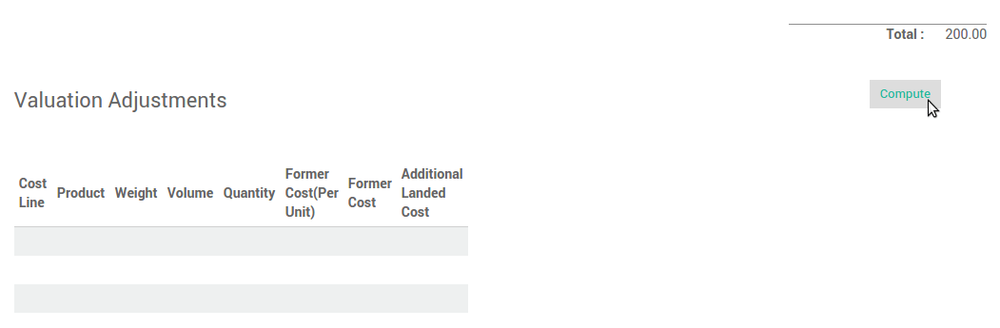

Overview
Landed costs include all charges associated to a good transfer.
Landed cost includes = Cost of product + Shipping + Customs + Risk
All of these components might not be applicable in every shipment, but relevant components must be considered as a part of the landed cost. We have to identify landed cost to decide sale price of product because it will impact on company profits.
Configuration
Applications configuration
First, you need to activate the use of the landed costs. Go to . Check accounting option Include landed costs in product costing computation & Perpetual inventory valuation, then click on Apply to save changes.

Then go to the . Choose costing method Use a 'Fixed', 'Real' or 'Average' price costing method, then click on Apply to save changes.

Landed Cost Types
Start by creating specific products to indicate your various Landed Costs, such as freight, insurance or custom duties. Go to .

Note
Landed costs are only possible for products configured in real time valuation with real price costing method. The costing method is configured on the product category.
Link landed costs to a transfer
To calculate landed costs, go to .
Click on the Create button and select the picking(s) you want to attribute landed costs.

Select the account journal in which to post the landed costs. We recommend you to create a specific journal for landed costs. Therefore it will be easier to keep track your postings.
Click the Compute button to see how the landed costs will be split across the picking lines.

To confirm the landed costs attribution, click on the Validate button.